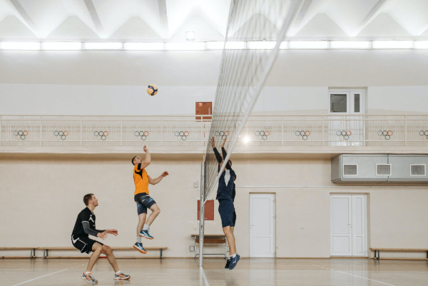
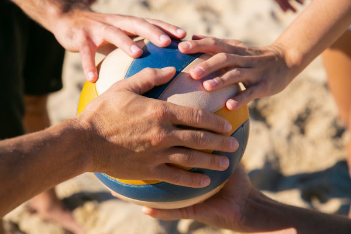

Quase tudo sobre Volêibol
O que é o volêibol?
o voleibol é um esporte praticado entre duas equipes numa quadra retangular(aberta ou fechada) ela é dividida por uma rede colocada verticalmente sobre a linha central.
para mais informações acessar o seguinte site: volêi
regras do volêi
- Cada equipe possui um técnico
- Uma partida é constituida de 5 sets
- Não existe tempo pré-determinado para cada set
- Cada set tem um máximo de 25 pontos com uma diferença mínima de 2 pontos
- Em caso de empate no set no final (24x24), a partida continua até que a diferença de dois pontos seja atingida (26x24, 27x25, etc.);
- Após o saque, a equipe só pode trocar três vezes na bola
- Ganha a equipe que vencer três sets
- Se houver empate nos sets (2x2) o 5º set será decisivo.
Com quem devo jogar vôleibol?
Divirta-se ao máximo jogando volêibol com seus amigos, aproveite ao máximo essa experiência e busque aprimorar suas habilidades no jogo e aprender tudo sobre ele.
